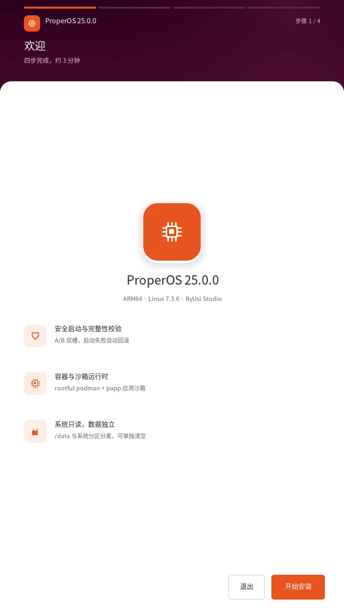
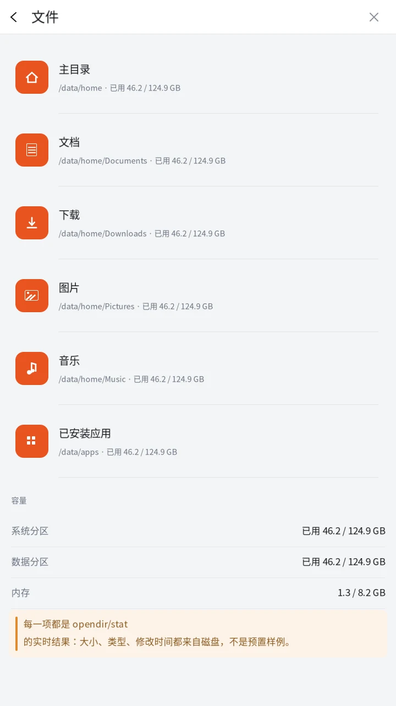
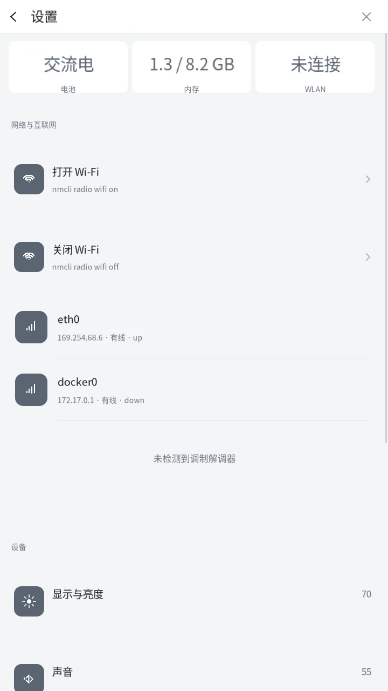
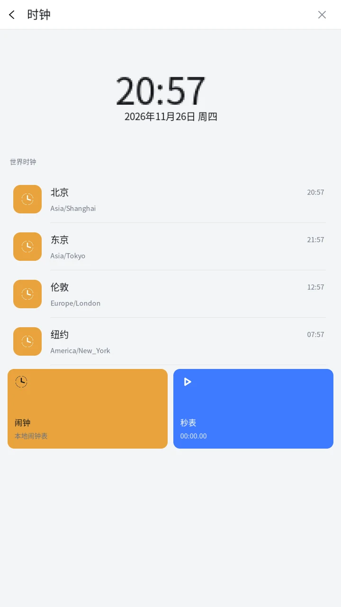
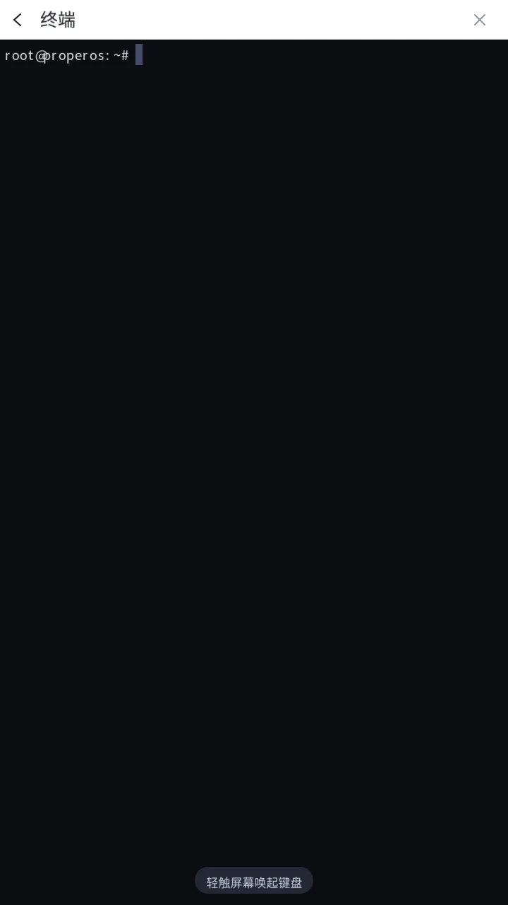
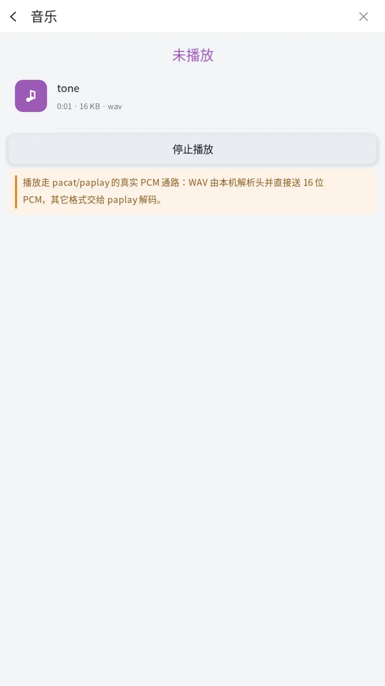
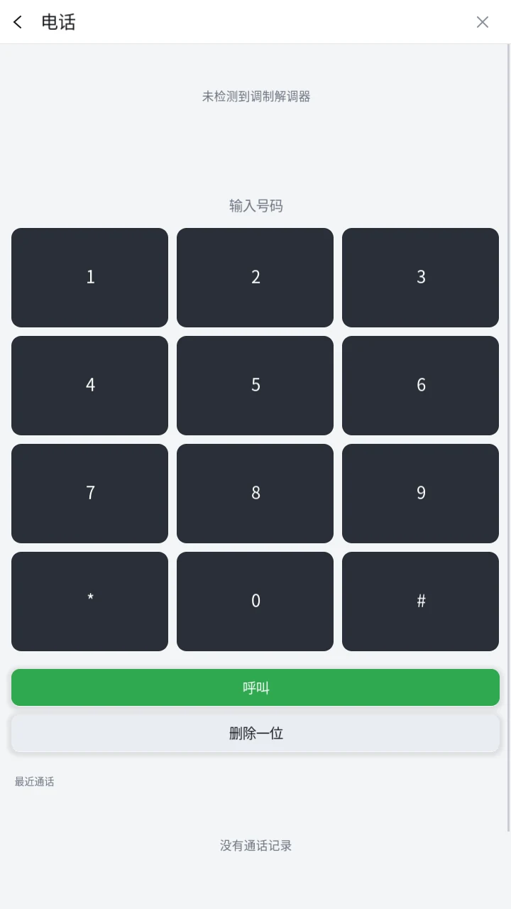
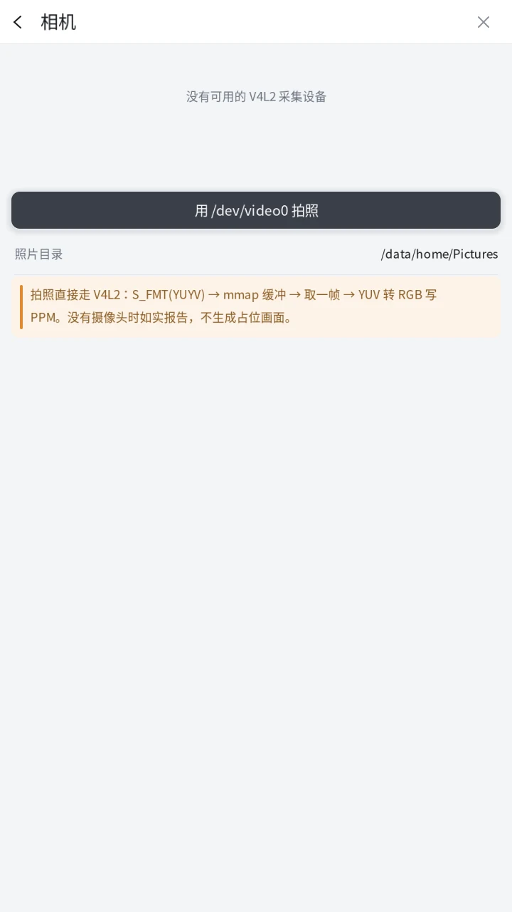

真正的 Plasma Mobile 桌面
桌面是 KDE Plasma Mobile 本体：KWin 合成、phoneshell、QuickSettings 与抽屉。无 GPU 时由 llvmpipe 软件渲染；没有 DRM 的环境自动落到自绘的 framebuffer 桌面。
- 会话由 systemd 拉起，
plasmashellrc锁定 phoneshell - 触摸 / 鼠标 / 键盘走 Wayland seat
独特之处
从引导到桌面、从包管理到终端，每一层都由仓库内的代码实现，可复现、可替换、可审计。
桌面是 KDE Plasma Mobile 本体：KWin 合成、phoneshell、QuickSettings 与抽屉。无 GPU 时由 llvmpipe 软件渲染；没有 DRM 的环境自动落到自绘的 framebuffer 桌面。
plasmashellrc 锁定 phoneshell终端应用用 posix_openpt 开伪终端，setsid + TIOCSCTTY 起登录 shell，自己解析 VT100/xterm 转义序列，支持 256 色、光标控制、滚动区与 1000 行回看。
开发一个应用 = 写 manifest.json 与界面 JSON，ppkg-app.py build 出一个 .ppkg，ppkg install 装到 /opt/properos/apps，桌面自动出现入口。渲染由 C 写的运行时完成，不使用 WebView。
nv_source / nv_action.jspk 单文件包仍可读取，但新应用不再用它应用与系统组件同一种格式：.ppkg 带 PKGINFO、逐文件 SHA-256 与可选签名，卸载走同一套数据库。同时接入 Debian bookworm 源，.deb 先转成 .ppkg 再安装。
ppkg build / install / verify / removeapt install 可直接用，内核包走三层拦截initramfs 第一阶段即自研引导器：槽选择、SHA-256 校验、失败回滚、应急 shell。StBoot 负责挂载 /data、首启播种可写层，再 switch_root。
properos-bootctl status / rollback / syncmark-good系统内建 rootful podman（netavark 网络、overlay 存储、cgroup v2），可直接跑容器；papp 用 namespace 与降权（uid 10000、默认无网络）隔离普通应用。
podman run --rm -p 8080:80 nginx:alpinepapp install / run / pack架构分层
没有黑盒二进制。每一层都能从源码重建，构建脚本按顺序执行即可得到同样的镜像。
Plasma Mobile（KWin + phoneshell）· properos-shell 兜底 · properos-setup 安装器 · properos-app 应用运行时
properd 服务与应用管理（Unix socket，崩溃重启）· papp 沙箱 · ppkg 系统包 · apt 兼容层
systemd 单元 · podman（rootful、netavark、overlay、cgroup v2）· 网络与时间同步
ProLoader 槽选择与校验 · StBoot 数据分区与首启播种 · GRUB 2.06 arm64-efi
Linux 7.3.6 LTS，显示 / 触摸 / 存储 / 网络 / 容器驱动全部内建，无需 initrd 加载模块
安装器
从 ISO 启动直接进入图形向导，渲染到 framebuffer，不依赖 X11、Wayland 或 GPU 用户态； 没有 framebuffer 时自动回退文本向导。

properos-install --disk /dev/mmcblk0 --yes --blank-password
properos.autoinstall=/dev/mmcblk0 properos.blankpass=1
tty1 自动登录进桌面
系统应用
电量来自 /sys/class/power_supply，内存在 /proc/meminfo，可用空间走 statvfs，
Wi-Fi 由 nmcli 驱动，相机走 V4L2——截图里的每个数字都是当时读到的真实值。







下载
安装镜像、预装磁盘镜像与全部源码。每个产物都附 SHA-256，下载后可立即校验。
UEFI El Torito 引导，启动即进图形安装器。可刻盘、dd 到 U 盘，或挂到虚拟机光驱。
6433cfc11726c5d9d089df45f7c90176756def00f5e831b032538ca541b85d66
GPT 三分区，已装好系统与全部应用，UEFI 直接启动。可写入手机、eMMC、SD 卡或 U 盘。
5858179f0692dcb5c80a471bb82bc7ebc00f7f3f9d2729c4ce2de1dfd217fcf7
src/、apps/、installer/、build/、overlay/、tools/、docs/ 与内核 defconfig，不含二进制产物。
0fb39e2f8968dcc5cfac83d0a2720fc669caecdb473d065741cd4e215cf317f1
内核单独提供：dist/kernel/Image-properos-25.0.0（50 MB）与
config-25.0.0-properos-arm64。全部产物由
build/arch/arm64/*.sh 可复现构建。
快速上手
写入后从 UEFI 启动即可；安装器会分区、格式化、拷贝、配置引导，最后重启进桌面。
# 安装 ISO（推荐：可选磁盘、可留空 root 密码）
sudo dd if=ProperOS-25.0.0-arm64.iso of=/dev/sdX bs=4M status=progress oflag=sync
# 或直接写预装镜像（省去安装步骤）
sudo dd if=ProperOS-25.0.0-arm64.img of=/dev/sdX bs=4M status=progress oflag=sync设备需有可用的 UEFI 固件。写入前确认 /dev/sdX 是目标盘，dd 会清空整盘。
ARM64 虚拟机，无需真机。键盘设备必须显式挂载，否则 virt 机器上没有可用键盘。
qemu-system-aarch64 -M virt -cpu cortex-a72 -m 2048 -smp 2 \
-drive if=pflash,format=raw,file=/usr/share/AAVMF/AAVMF_CODE.fd,readonly=on \
-drive if=none,file=ProperOS-25.0.0-arm64.img,format=raw,id=hd0 \
-device virtio-blk-device,drive=hd0 \
-device virtio-gpu-pci -device virtio-keyboard-pci -device virtio-tablet-pci \
-netdev user,id=n0 -device virtio-net-device,netdev=n0 \
-vnc 127.0.0.1:0无 KVM 时性能约为真机的十分之一，界面仍可用；真机请启用 KVM。
依赖交叉工具链与 debootstrap，五步产出内核、rootfs、initramfs、镜像与 ISO。
# 依赖：gcc-aarch64-linux-gnu qemu-user-static debootstrap grub-efi-arm64-bin
sudo bash build/arch/arm64/10-kernel.sh # Linux 7.3.6（约 20 分钟）
sudo bash build/arch/arm64/20-rootfs.sh # debootstrap + 组件 + 应用
sudo bash build/arch/arm64/30-initramfs.sh
sudo bash build/arch/arm64/40-image.sh # GPT 镜像
sudo bash build/arch/arm64/50-iso.sh # 安装 ISO构建脚本会自检 ISO 是否带 UEFI El Torito 启动项，缺失直接失败，避免交付不可引导的镜像。
应用以 .ppkg 交付：一个目录 = 一个应用，打包脚本产出标准 ppkg，装机后落在 /opt/properos/apps。
mkdir -p myapp/ui && cd myapp
cat > manifest.json <<'EOF'
{ "id": "miao.byusistudio.hello", "name": "示例", "version": "25.0.0",
"icon": "store", "color": "#3E7BFF", "entry": "ui/main.json",
"permissions": ["run"] }
EOF
echo '{ "title": "示例", "pages": [ { "id": "home",
"root": { "t": "label", "text": "你好，ProperOS" } } ] }' > ui/main.json
python3 tools/ppkg-app.py build . ../myapp.ppkg # PKGINFO + FILES + payload/
sudo ppkg install ../myapp.ppkg # 装到 /opt/properos/apps，桌面出现入口
properos-app /opt/properos/apps/myapp # 不装也能直接跑目录界面 JSON 只是描述，数据与动作仍由运行时的 nv_source / nv_action 提供；包内每个文件都进 FILES 清单，ppkg verify 逐条校验。
properos-bootctl statusproperos-bootctl rollbackppkg install clock.ppkgpapp run miao.byusistudio.helloppkg listproperd status properdpodman run --rm -p 8080:80 nginx:alpine边界
下面这些是当前版本的真实状态，以及对应的处理方式。
引导器自签，未购买微软 UEFI CA。用 properos-mok-enroll 生成 MOK、签名并登记后可在开启 Secure Boot 的固件上启动；否则在固件里关掉。
通用镜像面向 QEMU virt 与已提供 UEFI 的设备。真机可在构建时指定 PROPEROS_DTB，DTB 写入 /dtb 由 GRUB 加载。
安装器只填充 A 槽。执行 properos-bootctl sync 补齐 B 槽后即可切换与回滚。
图形界面全中文；纯文本控制台仍为 ASCII——内核控制台字体上限 512 字形，放不下 CJK。
无 GPU 用户态，fbdev 路径整屏重绘 25–40 ms（720×1280）；TCG 虚拟机下动画会掉帧。